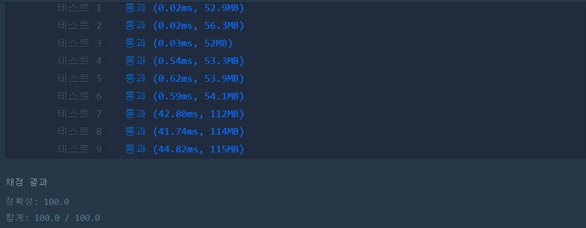

👀 문제
https://programmers.co.kr/learn/courses/30/lessons/68645
👊 도전
1. 설계
- map[n][n] 배열을 만들고, 반시계 방향으로 채운다.
- 방향 변경이 n번 일어나므로 이를 for문 i, 방향마다 움직이는 횟수는 n-i 되므로 이를 j로 한다.
- j를 보고 방향을 선택하여 map에 값을 저장한다.
- 이차원 배열의 값을 일차원으로 변경하여 리턴한다.
2. 구현
1
2
3
4
5
6
7
8
9
10
11
12
13
14
15
16
17
18
19
20
21
22
23
24
25
26
27
28
29
30
31
32
33
34
35
36
37
import java.util.*;
/**
*
* @author HEESOO
*
*/
class Solution {
public int[] solution(int n) {
int[] answer = {};
int[][] map=new int[n][n];
int num=0;
int x=-1, y=0;
for(int i=0;i<n;i++){ // 방향 돌리는 횟수
for(int j=i;j<n;j++){ // 그 방향으로 움직이는 횟수
if(i%3==0) x++; // 밑으로 이동
else if(i%3==1) y++; // 옆
else{ // 대각선
x--;
y--;
}
map[x][y]=++num;
}
}
// 반시계 달팽이 값 answer에 넣기
int idx=0;
answer=new int[num];
for(int i=0;i<n;i++){
for(int j=0;j<n;j++){
if(map[i][j]==0) break;
answer[idx++]=map[i][j];
}
}
return answer;
}
}
3. 결과
 🤟 성공 🤟
4. 설명
- 규칙을 찾는다
- map[n][n]에 반시계 방향으로 넣으면 총 n번의 방향 전환이 일어난다.
- 처음 방향에서는 n개 움직이고, 그 다음 방향은 n-1, … , 마지막은 1개 움직인다.
- 따라서 i: 방향 전환 횟수, j: 방향안에서 움직이는 횟수로 두고 이중 for문을 만든다.
- i를 보고 어느 방향인지 본다. 방향은 총 3가지가 있으므로 나머지 연산을 이용한다. 0일때는 아래, 1은 옆, 2는 대각선이 된다.
- 해당 위치에 num을 넣는다.
- 이 코드는 i번째 방향에서 이동 개수(j)를 알고 있으므로 인덱스를 넘어가지 않는다.
- 배열로 리턴한다
- 이차원배열 map에 저장한 값을 int[]형에 맞게 넣는다.
- map[i][j]==0이 나오면 그 행에서 다음 원소들은 볼 필요가 없으므로 break하여 다음 행으로 넘어간다.